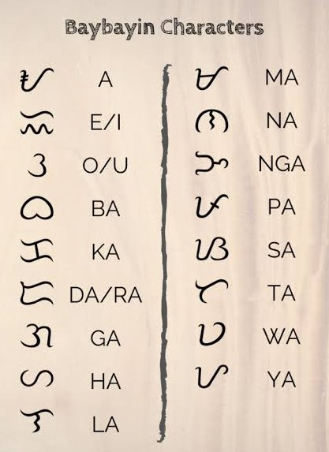

Bago pa man dumating ang mga Kastila ay masasabing buo na ang kabihasnan sa Pilipinas na mapatutunayan ng kanilang kakayahan sa pagbabasa at pagsusulat. Maraming mga dokumento at pagpapatunay na ang mga Pilipino ay gumagamit na ng higit na mahusay na paraan ng pagsulat simula pa lamang noong 900 AD. Ang pagkakatuklas sa Laguna ng inskripsyon sa binatbat na tanso ay isa pa ring matibay na patunay sa matandang kabihasnan bukod sa paggamit ng baybayin.
Kilala ang baybayin bilang lumang pamamaraan ng pagsulat ng mga Pilipino bago sakupin ng mga Kastila ang bansang Pilipinas. Sinasabi na ito ay nag-ugat sa Kawi, isang paraan ng pagsulat ng mga taga-Java at iba pang bahagi ng Timog Silangang Asya. Maihahalintulad ito sa pamamaraan ng pagsulat ng mga Hanundo, Buhid, at Tagbanwa na hanggang sa kasalukuyan ay ginagamit pa rin ng nasabing mga pangkat. Ang baybayin ay tumutukoy sa pagsasatitik ng isang salita na sa Ingles ay may katumbas na "to spell".
Nakabatay sa sistemang abugida ang pagsulat ng baybayin na kung saan ito ay gumagamit ng mga pagtatambal ng katinig at patinig. Ang pagsulat sa simpleng anyo ng bawat titik ay isang katinig na nagtatapos sa patinig na "A", samantalang nilalagyan naman ng kudlit sa ibabaw (kung isasama ang patinig na "E" o "I) at sa ibabaw naman (kung patinig na "O" o "U") kung ang isang katinig ay nagtatapos sa ibang patinig. Ang paglalagay ng kudlit sa ibabaw o ilalim ay angkop lamang gamitin para sa mga katinig at hindi nararapat para sa mga patinig.
Sa orihinal na anyo ng baybayin, ang isang katinig na walang kasamang patinig ay hindi maaaring maging makabuluhan dahilan kung bakit pinasimulan ng isang paring Kastila na si Francisco Lopez ang paggamit ng kudlit sa kanyang mga pagsasalin ng aklat sa katutubong wika. Nasa anyong ginamit na kudlit na katulad ng virama sa eskriptong Devanagari ng India.
Nasa anyong Unicode (Tagalog ng Sign Virama) ang baybayin.
Pinaniniwalaan na patuloy na naging maunlad ang pagsulat na ito noong unang siglo nang sinakop ng Espanya ang Pilipinas, Ang paglilimbag ng mga Espanyol sa mga aklat na nakatitik sa sulat ng mga sinaunang Tagalog ay pagpapakita ng mataas na antas ng kakayahan ng mga katutubo sa pagbabasa, bagamat may mga pag-aaral din na lumabas na may mga datu na walang kakayahang lumagda sa mga sinumpaang pahayag at sa mga titulo ng lupa.
Ang mga sinaunang Tagalog ay gumamit ng mga dahon, palapa, saha, banakal, kawayan, at balat ng iba't ibang prutas upang isatitik ang kanilang baybayain na ginagamitan ng mga matutulis na bagay na katulad ng patalim o sundang, o mga maliliit na piraso ng bakal.
Sa artikulo ni Morrow (2002, 2010) kanyang tinalakay ang mga posibleng dahilan ng pagkawala ng baybayin sa kabila ng pagsusumikap ng mga prayle na gamitin ito sa pagtuturo ng kanilang pananampalataya. Kanyang sinabi na ang sariling kapakanan ay isa pang dahilan kung bakit pinabayaan ng mga Pilipino ang baybayin at ipinagpalit nila ito sa alpabeto. Madali nilang natutuhan ang alpabeto at ang kakayahan sa pagsulat nito ay nakatulong sa kanilang pag-asenso sa ilalim ng pangangasiwa ng Espanyol. Nakapagtrabaho sila bilang mga kawani, tagasulat at kalihim-mga gawain na may kaunting kahalagahan. Makikita kung gaano kadaling tinanggap ng mga Pilipino ang bagong alpabeto sa mga punang isinulat ni Pedro Chirino, (nang may kaunting pagmamalabis) noong taong 1604. Ipinahayag ni Morrow ang kanyang pagkalungkot sapagkat halos lahat ng uri ng mga katutubong sining ng Pilipinas na naabot ng impluwensiya ng Espanya ay napabayaan, at nanatili lamang sa mga lugar na hindi sinakop ng mga Espanyol. Sa palagay ni Hector Santos, isang mananaliksik sa California, ang mga pananagutan ng mga Pilipino sa mga mananakop na Espanyol ay nakasagabal sa pagpapanatili ng kanilang dating mga ugali.